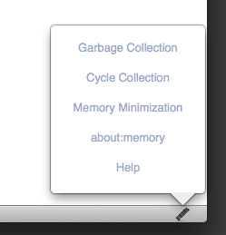
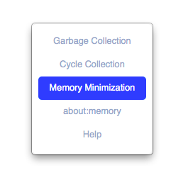
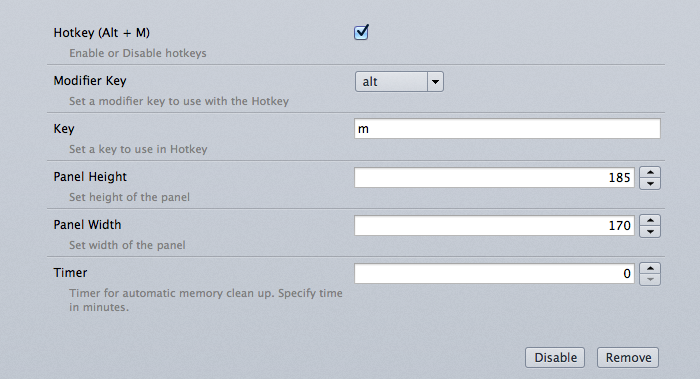

FreeMemory comes with a lot of easy to reach ways to perform the memory minimization operations found in about:memory.
1. Using the widget which appears on the add-on bar.

2. Using the hotkeys (ALT + M).

The add-on preference consists of a couple of powerful features which could help you customize freeMemory.

1. Enable or Disable hotkeys.
2. In case there is a conflict between the hotkeys or any preferred key combo, they could be changed.
3. Adjust panel height and width.
4. Set a time interval and let freeMemory perform minimization automatically for you.